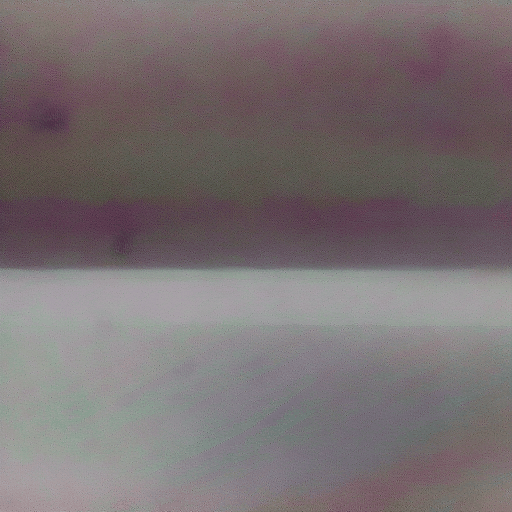
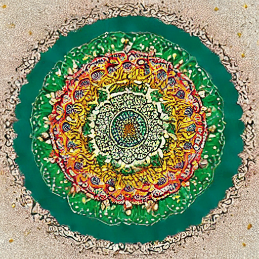
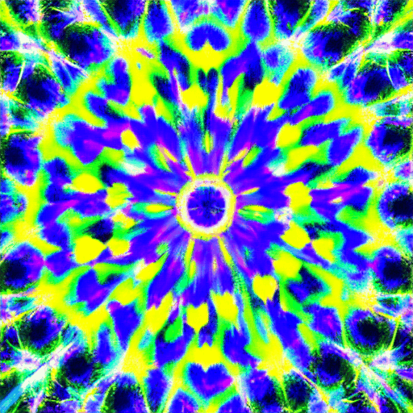
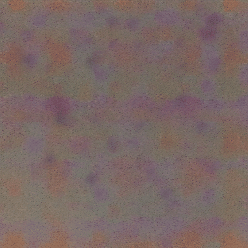
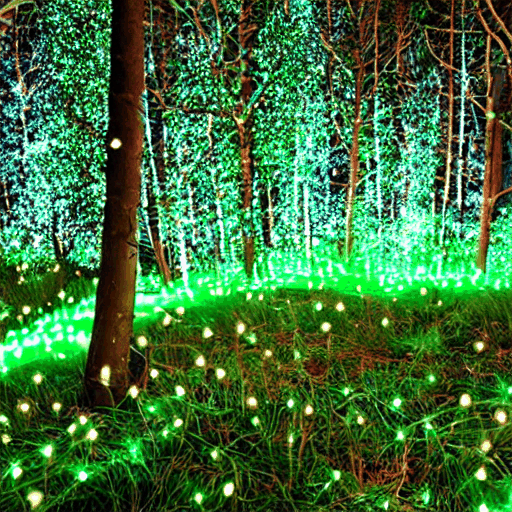
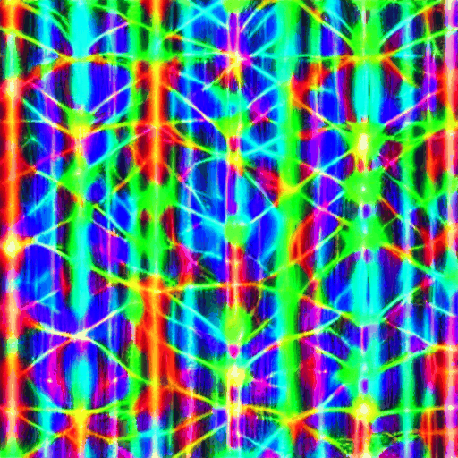
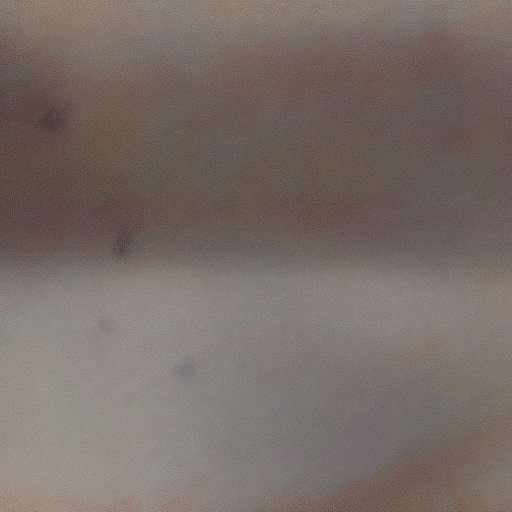

We distilled the AnimateDiff UNet and MotionAdapter down to Latent Consistency Model (LCM) weights using our own Blackhole hardware. No extra GPUs. No cloud bill. Just 13 hours of consistency training.
The short version: we teach a copy of the model to predict clean images directly, skipping most of the diffusion chain.
AnimateDiff starts from pure noise and runs 25 denoising steps, each calling the full UNet. Each step corrects the image a little. Slow, but each call is independent — great for quality.
A student model is trained to match what the teacher predicts several steps ahead. After distillation, the student can jump directly from noisy input to a clean prediction — in 4–8 calls instead of 25.
AnimateDiff frames share a single UNet pass (via the MotionAdapter's temporal attention). Distilling the UNet and adapter separately lets us compress both the spatial and temporal components independently.
ByteDance's AnimateDiff-Lightning distilled the UNet directly. Our approach follows LCM (Song et al. 2023): consistency MSE loss with skip-step targets and CFG guidance baked in during training. Different math, similar result.
The core consistency loss is simple: given a noisy latent z_t, the student predicts the clean latent z_0. A frozen copy of the teacher also predicts z_0 from a noisier version z_{t+k} (the "skip step"). The student is penalized for differing from the teacher's prediction. Over 5,000 training steps, the student learns to skip the intermediate chain entirely.
For the MotionAdapter phase, we freeze the spatial UNet backbone entirely and only train the temporal attention modules (motion_modules.* parameters — roughly 1.7 GB). This keeps spatial quality stable while compressing the temporal consistency.
No distilled weights needed to run. If you don't want to distill your own, the base AnimateDiff pipeline still works as-is. Distillation is purely additive — same architecture, just a different parameter checkpoint loaded at inference time.
Phase 1 distills the spatial UNet; Phase 2 distills the temporal MotionAdapter. Each produces a separate weight file.
We train a student copy of the SD 1.4 UNet with consistency loss against the frozen teacher. The student sees random Gaussian latents at varying noise levels; the teacher runs ahead by a skip step. After 5,000 steps per target count, we export unet_lcm_4step.pt and unet_lcm_8step.pt.
With the Phase 1 UNet frozen, we train only the MotionAdapter's temporal attention modules. The student UNet (distilled Phase 1 weights + trainable motion modules) is compared against the teacher UNet (original weights) at each skip step. After 5,000 steps, motion consistency is compressed into motion_adapter_lcm_4step.pt and motion_adapter_lcm_8step.pt.
# Phase 1 — UNet (runs ~9.7 h) python scripts/distill_lcm.py --steps 4 --num_train_steps 5000 python scripts/distill_lcm.py --steps 8 --num_train_steps 5000 # Phase 2 — MotionAdapter (~3.1 h each) python scripts/distill_motion_adapter.py --steps 4 --unet weights/unet_lcm_4step.pt python scripts/distill_motion_adapter.py --steps 8 --unet weights/unet_lcm_8step.pt # Or run the full pipeline with resume support: bash scripts/record/run_distill.sh
All training ran on CPU using the same Blackhole machine used for inference — no dedicated training GPU.
Consistency distillation loss oscillates normally — the student and teacher are always adapting relative to each other. Concern markers are NaN/Inf, loss stuck exactly at 0, or a sustained upward trend. We saw none of those.
| Hardware | Phase 1 (UNet) | Phase 2 (Adapter) | Total | Note |
|---|---|---|---|---|
| Blackhole P300C (CPU only) | 9.7 h | 6.2 h | ~13 h | What we actually ran |
| Apple M4 Pro (est.) | ~5–7 h | ~3–4 h | ~8–11 h | Faster unified memory bandwidth |
| NVIDIA RTX 4090 (est.) | ~35–50 min | ~20–30 min | ~60–80 min | CUDA + fp16; ~10× faster |
| Blackhole (TTNN training, est.) | ~1–2 h | ~45–90 min | ~2–4 h | TTNN training ops not yet wired up |
Why CPU? The TTNN training graph for UNet-scale models isn't wired up yet — TTNN currently targets inference. All distillation ran on the host CPU (PyTorch + diffusers), using the Blackhole machine as a workstation rather than an accelerator. The silicon was idle during training.
Each row uses the same prompt and seed (42). Left: original 25-step base model. Right: our distilled variants. The quality compression from 25 → 4 steps is surprisingly small.
Aurora borealis over arctic ice
"aurora borealis dancing over arctic ice, green and violet ribbons, starfield, cinematic"

lcm-aurora.gifSacred mandala blooming from starfield
"sacred mandala blooming from starfield, geometric petals, gold and violet, cosmic, cinematic"



lcm-mandala.gifMycelium network, bioluminescent spores
"mycelium network glowing with bioluminescent spores, threads of light connecting nodes, cosmic forest"



lcm-mycelium.gifMeasured on Blackhole P300C (silicon) and the same machine's CPU. 8 frames unless noted.
| Mode | Scheduler | Steps | Time / frame | Total | Speedup |
|---|---|---|---|---|---|
| Original | PNDM | 25 | ~15 s | ~120 s | 1× |
| Euler | EulerDiscrete (trailing) | 25 | ~15 s | ~120 s | 1× (same UNet) |
| Euler | EulerDiscrete (trailing) | 8 | ~5 s | ~40 s | ~3× |
| Euler | EulerDiscrete (trailing) | 4 | ~2.5 s | ~20 s | ~6× |
The Euler scheduler speedup on Blackhole is from fewer UNet calls, not distilled weights — the base SD 1.4 TTNN UNet runs each step. Quality degrades noticeably below 8 steps without distilled weights.
| Mode | Weights | Steps | Time / frame | Total | CFG |
|---|---|---|---|---|---|
| Original | Base AnimateDiff | 25 | ~2 min | ~16 min | 7.5 |
| LCM-8step | unet_lcm_8step.pt | 8 | ~45 s | ~6 min | 1.0 |
| LCM-4step | unet_lcm_4step.pt + adapter | 4 | ~15 s | ~2 min | 1.0 |
CFG=1.0 required for distilled weights — guidance is baked into the consistency training. Passing CFG >1.0 with LCM weights produces oversaturated, artifact-heavy frames.
Key insight: on Blackhole silicon the speedup comes from fewer UNet calls (each call is ~2.5 s regardless of step count). On CPU the speedup is compounded — fewer calls and each call loads lighter distilled weights. The 4-step LCM on CPU is our fastest end-to-end path at ~15 s/frame.
Four weight files, one command. Weights are ~10 GB total.
# Download distilled weights python scripts/download_weights.py --lcm # 4-step LCM inference — fastest path python examples/generate.py \ --mode cpu \ --lcm-unet weights/unet_lcm_4step.pt \ --lcm-adapter weights/motion_adapter_lcm_4step.pt \ --prompt "aurora borealis over arctic ice, cinematic" # 8-step LCM — better quality, still 3× faster than baseline python examples/generate.py \ --mode cpu \ --lcm-unet weights/unet_lcm_8step.pt \ --prompt "sacred mandala blooming from starfield, cosmic"
The --lcm-unet flag loads the distilled UNet and automatically switches to EulerDiscreteScheduler with timestep_spacing="trailing" — the correct schedule for LCM inference. --lcm-adapter is optional; it loads the companion distilled MotionAdapter for full temporal consistency compression.
Want to distill your own? See the Distillation Guide for the full walkthrough, including how to reproduce our training run and adapt the loss schedule.